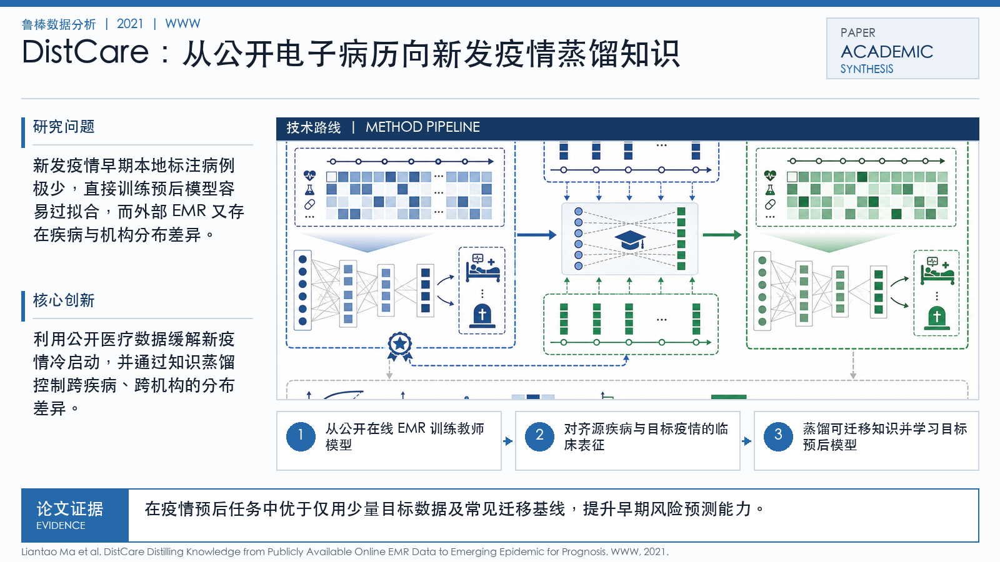

Problem
解决的问题
新发疫情早期本地标注病例极少，直接训练预后模型容易过拟合，而外部 EMR 又存在疾病与机构分布差异。
Robust Data Analytics · 2021 · WWW
DistCare Distilling Knowledge from Publicly Available Online EMR Data to Emerging Epidemic for Prognosis
Problem
新发疫情早期本地标注病例极少，直接训练预后模型容易过拟合，而外部 EMR 又存在疾病与机构分布差异。
Value
在疫情预后任务中优于仅用少量目标数据及常见迁移基线，提升早期风险预测能力。
Paper-grounded Academic Summary
该代表页依据原文摘要、贡献段与方法图注生成。方法视觉由 ImageGen 按论文证据逐篇绘制，中文研究问题、技术路线、创新点与实验结论采用确定性排版，以保证内容与字符准确。
打开原文 PDF
Technical Route
Innovation